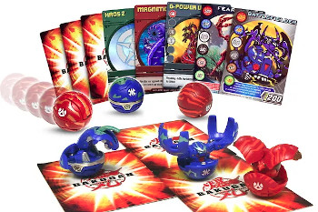

In what concerns the continuous evaluation solving exercises grade during the semester, you should submit until 23:59 of October 18th
(this exercise will still be available for submission after that deadline, but without couting towards your grade)
[to understand the context of this problem, you should read the class #02 exercise sheet]

Bakugans are small spheres that, when placed on special cards, open up and transform into different creatures, such as a dragon or a scorpion. Each Bakugan has a certain amount of G energy associated with it, which is then used when they battle to find out which one is the strongest. For example, we may have one Bakugan with 300G, another with 400G and another with 500G, in which case the strongest of the three would be the one with 500G.Little Sam loves his Bakugans and decided to line them all up so he could take several photos and show them to his friends. As one photo cannot capture all the Bakugans, he decided that he only wanted to show the photos that captured the strongest Bakugans, with the most energy, but he needs your help to calculate the energy present in each photo.
The layout of the Bakugans can be thought of as a sequence of integers describing the energy of each one. For example, the following sequence represents 10 Bakugans arranged in a row:
Position: 1 2 3 4 5 6 7 8 9 10
Bakugans: 100 200 300 100 400 100 500 600 200 300
Each photo is described by a contiguous subsequence of Bakugans, identified by their starting positions. For example, a photo between positions 2 and 6 would correspond to::
Position: 1 2 3 4 5 6 7 8 9 10 Bakugans: 100 200 300 100 400 100 500 600 200 300 (energy on the photo = 200 + 300 + 100 + 400 + 100 = 1100)
In this case, the total energy of the photo (corresponding to the sum of the energies of the Bakugans that appear in it) would be 1100. Can you help Sam find out the energy present in each of his photos?
Given a sequence of N Bakugans, described by the energies Ei of each one, as well as a series of P photos, each indicating that it contains the Bakugans between positions Ai and Bi, your task is to calculate, for each photo, the sum of the energies of the Bakugans with positions in the interval [Ai, Bi].
The first line contains a single integer N, the number of Bakugans. The second line contains N space-separated integers Ei, the energy values of the sequence of Bakugans.
The third line contains a single integer P, the number of photos. The next P lines describe the photos, one per line, each one containing two integers Ai Bi representing the initial and final position of the corresponding photo.
The output should contain P lines, one per photo. The i-th line should contain a single integer representing the sum of the energies on the positions between Ai and Bi, inclusive.
The following limits are guaranteed in all the test cases that will be given to your program:
| 1 ≤ N ≤ 200 000 | Number of Bakugans | |
| 1 ≤ Ei ≤ 1 000 | Energy of each Bakugan | |
| 1 ≤ P ≤ 200 000 | Number of photos | |
| 1 ≤ Ai ≤ Bi ≤ N | Initial and final position of each photo |
| Example Input | Example Output |
10 100 200 300 100 400 100 500 600 200 300 5 2 6 1 10 7 7 4 8 3 9 |
1100 2800 500 1700 2200 |
Explanation of example input/output